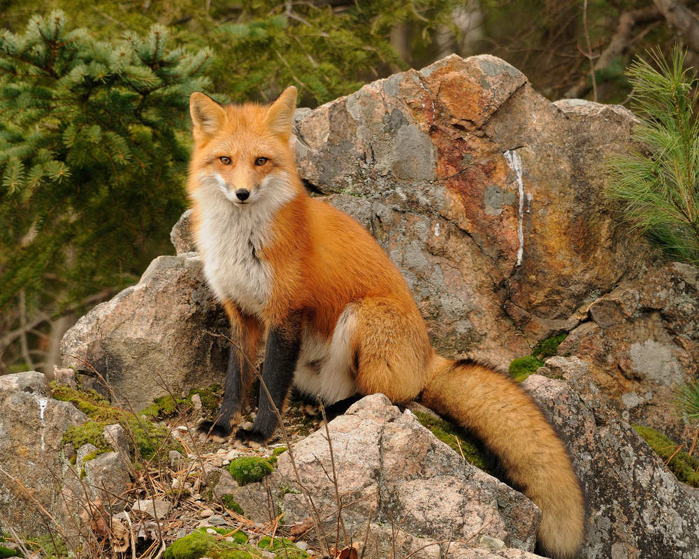

2 especies de raposas.
Existem dezenas de raposas espalhadas pelo mundo, divididas entre Verdadeiras(gênero Vulpes) e outras espécies de 1 carnídeos sul-americanos
CURIOSIDADE!!
Projeto Raposinha do Pontal, desenvolvido em Corumbaíba, Goiás, desde 2020.
Principais Projetos de ProteçãoProjeto Raposinha do Pontal (Brasil): Monitora a ecologia, a saúde e o comportamento de raposas-do-campo em Corumbaíba (GO), enfrentando ameaças como o avanço da agropecuária e atropelamentos.Guardiões da Floresta / Proteção da Raposa de Darwin (Chile): Usa inteligência artificial e monitoramento acústico na nuvem para proteger a raposa de Darwin (Lycalopex fulvipes), espécie chilena criticamente ameaçada de extinção.